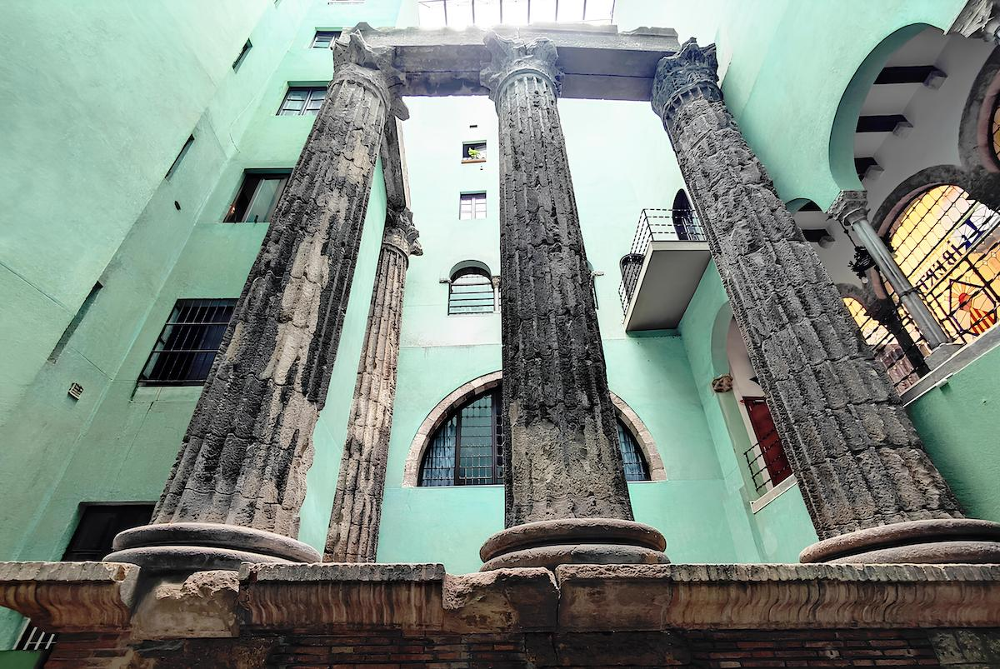

Si no has podido entrar, aquí tienes lo que guardan estos muros.
Son los últimos vestigios del gran Templo de Augusto, el corazón de la antigua Barcino.
📜 Archivo Histórico:
Descubre el secreto de la "Viajera":
🕰️ HORARIOS:
(Entrada gratuita)